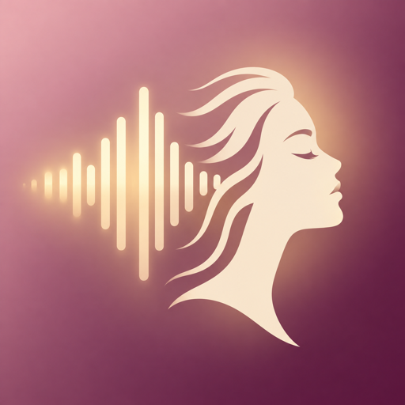
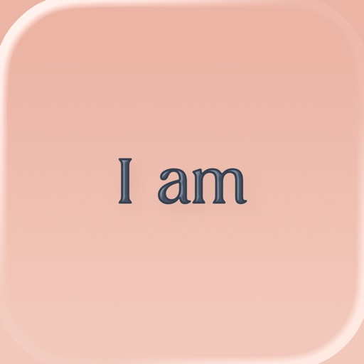
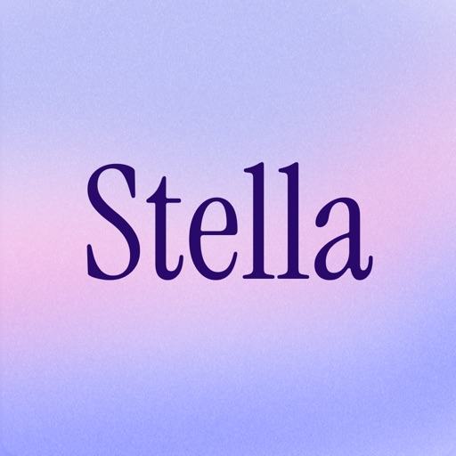
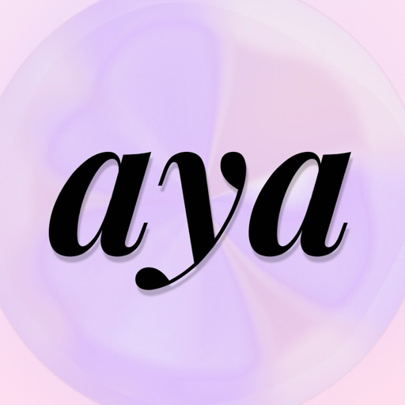
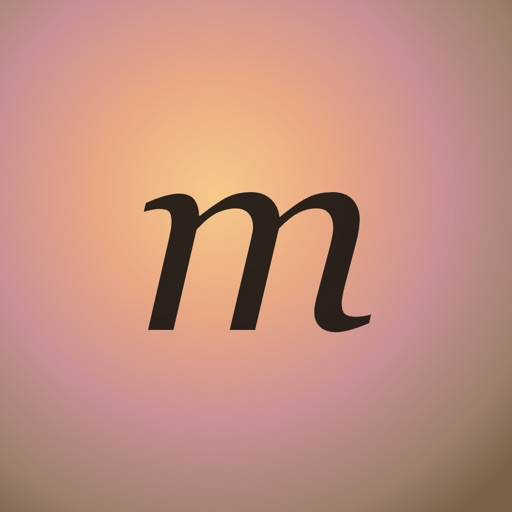

Herself 🎙️ — что мы строим
Персональные аффирмации и аудио-истории о «жизни мечты» голосом будущей себя. Суть, аудитория, боли ниши, конкуренты, MVP, экономика озвучки, ASO и прогноз — по проверке гипотезы и брифу.
0. Позиционирование и суть
«Голос той, кем ты становишься»
ИИ пишет персональные аффирмации и короткие аудио-истории о «жизни мечты» под цели пользователя и озвучивает их голосом «будущей себя» (из набора голосов) или собственным голосом пользователя. Ритуал утром и вечером (включая засыпание).
- Ниша: Stella, Aya, I am, Innertune.
- Позиционирование: «аффирмации нового поколения». Основные ключи — affirmations / daily affirmations / i am affirmations; слово «manifest» — в названии.
- Канал: только ASO (бюджет ~$400/мес на ASO-инструменты). Ни TikTok, ни платной рекламы.
- Цель: $2 000 net MRR к 6-му месяцу после релиза (после комиссии Apple 15%).
- Рынок: US + Tier-1 (GB, DE и т. д.), английский.
Score гипотезы: 8/10 · GO
| Критерий | Балл | |
|---|---|---|
| ASO: ключи в кластере | 2/2 | |
| Покрытие трафиком | 2/2 | |
| Деньги в нише (не гиганты) | 1/2 | |
| Пользователи (Jev) | 1/2 | |
| Молодой победитель | 2/2 |
Стоп-факторов: 0. Покрытие трафиком ×2.7. Источник: research/hypothesis/score.json, verdict.md.
Имя и метаданные

Herself: Manifest Affirmations — 30/30 символов, под иконкой Herself. App ID 6816159497, имя забронировано 25.09.2026, сборка 1.0 (1) загружена. Подзаголовок Your Future Self, Your Voice (28/30; вариант B ещё открыт). Иконка — заглушка B, выбор из трёх открыт. Почему это имя, а не IamNow — вкладка «Название».Аудитория — женщины 18–40, US + Tier-1, английский. Категория — Health & Fitness (вторичная — открытый вопрос).
1. Кто платит за аффирмации своим голосом (когорты v2, 26.09)
Когорты платящих именно за этот сервис: 15 секунд записи → сцена «уже случилось» её голосом. Собраны из 6 866 отзывов App Store, проверенных постов Reddit, сигналов X, ASO и теста близкого круга; доли и конверсии — оценки (смесь ≈ 1.62% установка→оплата, как p50 брифа). Колонка Jev — «платит» на рекомендованном жёстком пейволе из консилиума (синтетические персоны, сравнивать только между собой).
| Когорта | Доля платящих | Установка→оплата | Готовность платить | Jev: платит | Ищет в App Store |
|---|---|---|---|---|---|
| Мечтательница, которой мешает чужой голос Женщина 19–32 (US/UK/CA), студентка или первые годы работы, манифестация из TikTok/Instagram. Пробовала Stella, Aya или Future You: плакала на первой истории о … | 28% | 1.8% | средняя | 0.329 | «manifest», «stella», «manifestation app» |
| Спокойное утро без эзотерики Женщина 27–45, работает и/или растит детей, в «закон притяжения» не погружена. Пользуется виджетом I am или ничем. Хочет минуту спокойствия и доброе слово о себ… | 22% | 0.9% | низкая | 0.115 | «affirmations», «daily affirmations», «positive affirmations» |
| Сама себе диктор Женщина 17–35, практикует self-concept / law of assumption / «свои сабы». Уже записывает себя в Parrot, ThinkUp или на диктофон и слушает по кругу, иногда всю н… | 20% | 4.0% | высокая | 0.244 | «record affirmations», «voice affirmations», «affirmations in my own voice» |
| Засыпаю под свой голос Женщина 22–45 с бессонницей, сменной работой или тревожными вечерами. Засыпает под аффирмации с YouTube, Innertune или свои записи; злится, когда звук обрываетс… | 14% | 2.2% | medium-high | 0.334 | «sleep affirmations», «affirmations while sleeping», «loop affirmations» |
| Любовь и новая глава Женщина 18–40 после разрыва, развода или в безответной любви (SP). Ночные мысли, скриптинг в заметках, сабы о любви. Часть живёт с семьёй или соседями.… | 10% | 2.4% | medium-high | 0.372 | «manifest love», «love affirmations», «self love» |
| Перед важным событием Женщина 20–40 с датой в календаре: экзамен, собеседование, защита, суд, тест по вождению, виза. Раньше не пользовалась приложениями аффирмаций или писала текст … | 6% | 1.0% | низкая | 0.223 | «confidence affirmations», «confidence», «exam affirmations» |
Портреты и голоса из отзывов
Мечтательница, которой мешает чужой голос · 28%
Боль: История красивая, но звучит как чужая жизнь: диктор говорит «я» не её голосом. ИИ путает машину, имя, детали. Недельная цена и списание после отмены.
Триггер: Посмотрела ролик блогера «слушаю свою историю каждый вечер» или только что отменила Stella после списания; тяжёлая неделя, хочется прямо сегодня «прожить» мечту.
Зачем свой голос: Главная претензия к лидеру ниши — чужой голос в первом лице. «Я» её голосом снимает разрыв «это чья-то жизнь». В отзывах Stella 5 прямых просьб «сделайте, чтобы говорила я».
Возражение: «Опять $7.99 в неделю? Меня уже списали в Stella». Плюс страх, что клон прозвучит странно.
Что заставит заплатить: Эмоциональный пик до оплаты (15-секундное превью сцены её голосом), точные детали из её ответов, понятная дата списания и отмена в Настройках.
«It made me feel as if I was listening to someone else life.»
stella #13764850161
«somehow figure out a way to make it sound like I’m the one that’s speaking to me.»
stella #13745039581
Спокойное утро без эзотерики · 22%
Боль: Готовые аффирмации общие и «не про меня», хорошие надо искать; внутренний критик громче; нет времени на практики.
Триггер: Тяжёлый период на работе или дома, плохое утро, совет подруги или терапевта; январь (пик сезона по Google Trends).
Зачем свой голос: Нат: «аффирмации их надо либо поискать… а так ты сам себе записываешь. Это очень круто». Своё — без поиска и без чужого роботичного голоса (I am #8499790302).
Возражение: «Ещё одна подписка за слова на экране», недельная цена раздражает, «слишком эзотерично», неловко слышать свой голос.
Что заставит заплатить: Простая бытовая сцена, в которую веришь; годовая цена рядом с I am ($59.99/год); никаких «домашних заданий» и стриков.
«Do you think you’ll offer the option of being able to record an affirmation in your own personal voice sometime? The existing options are extremely robotic sounding, quite a turn off.»
i-am #8499790302
«The calm I have felt since downloading this app and adding the widget to my Home Screen is worth the yearly subscription!»
i-am #10606048496
Сама себе диктор · 20%
Боль: Дыхание и запинки в записи, всё переписывать при каждой правке, дома семья — стыдно говорить вслух, записи теряются.
Триггер: Новый скрипт или цель — снова садиться записывать; совет «свой голос убедительнее»; потеряла записи.
Зачем свой голос: Для неё это правило практики («saturation» своим голосом), а не фича. Нужен её голос, «только чище» и без перезаписи.
Возражение: «Parrot бесплатный, я и сама могу». Клон — «это не совсем я». Подписка вместо lifetime.
Что заставит заплатить: Напечатала или ответила на вопросы — получила трек своим голосом без дублей; повтор всю ночь; библиотека не пропадёт.
«i record affs and play them all day and night!! if this app ever gets removed i will cry»
parrot #12602636128
«Manifestation and shifting paradigms do work better when affirmations are recorded and played with your own voice before bed and first thing in the morning. No doubt worth the yearly cost.»
thinkup #8378903610
Засыпаю под свой голос · 14%
Боль: Воспроизведение обрывается при блокировке экрана, громкие или бодрые голоса, нет повтора и таймера.
Триггер: Бессонница, стрессовый период, «программирую подсознание во сне».
Зачем свой голос: Свой спокойный голос убаюкивает и не раздражает: «Finally, I can fall asleep to affirmations in my own voice!»
Возражение: Будет ли играть всю ночь с выключенным экраном? Не разбудит ли бодрая подача?
Что заставит заплатить: Спокойная подача (пресет «спокойно»), повтор всю ночь, таймер сна; годовая цена.
«Finally, I can fall asleep to affirmations in my own voice! So simple and easy to use.»
parrot #13851349423
«I am loving hearing my dreams and desires spoken back to me as it’s happening. Please STELLA, make it possible to have a playlist of all my best manifestations, so I can loop the list as I fall asleep !»
stella #13920811183
Любовь и новая глава · 10%
Боль: Стыдно проговаривать интимные аффирмации вслух дома; «не сработало»; хочется снова чувствовать себя любимой и целой.
Триггер: Разрыв, no contact, развод, годовщина; ночь, когда не уснуть.
Зачем свой голос: Одна нейтральная запись 15 с — дальше интимные слова её голосом без чтения вслух при семье. Слышать «меня можно любить» своим голосом.
Возражение: Сцена не пообещает «он вернётся» (так задумано: только её выбор и чувства) — часть SP-аудитории это разочарует; приватность.
Что заставит заплатить: Эмоция и приватность; быстрый первый результат; годится недельный триал «на сейчас».
«my voice shakes a lot or cracks sometimes, and since I live with my family, it's uncomfortable to say intimate affirmations while they're home.»
источник
«This app helped me grieve the loss of my mother, my divorce, and is a phenomenal app that is worth every penny!»
i-am #9993234315
Перед важным событием · 6%
Боль: Нервы, «прийти собранной»; нет времени разбираться с практиками.
Триггер: До события 1–3 недели.
Зачем свой голос: Свой голос уверенно проговаривает сцену «уже сдала/уже прошла» — как в посте про защиту PhD, записанную своим голосом.
Возражение: Нужно на 1–2 недели → триал и отмена; «аффирмации — это не моё».
Что заставит заплатить: Быстро, одна сцена под событие; честный триал с датой отмены.
«I used AI to write affirmations for passing my PhD viva with minor correctios, recorded them in my own voice, and instead I passed with no corrections.»
источник
«It also is not good at, even when heavily promoted, writing manifestations about visualising the process»
stella #14254751640
Источник: research/cohorts-v2-2026-09-26/; консилиум — research/consilium-2026-09-26/FINDINGS.md. Цитаты — реальные (id отзыва или проверенная ссылка).
Когорты v1 — гипотеза 22.09 (до теста технологии)
Когорты v1 (Jev, US)
Jev (jev-1.13.0) — синтетические пользователи по 4 когортам, взвешенные по долям. Доли — оценка воркера, не замер. Смотрите на порядок и на план, а не на абсолютные проценты.
| Когорта | Доля | Установит | Триал | Заплатит | План | Причина отказа | Запрос |
|---|---|---|---|---|---|---|---|
| TikTok-аудитория манифестации (Gen Z) Woman 18-24, US, student or first job, watches manifestation and 'that girl' TikToks daily, has tried free subliminals on YouTube, little disposable income, often pays via parent's Apple ID. | 35% | 76% | 60% | 35% | никакой | цена | «manifestation app» |
| Ежедневные аффирмации по привычке Woman 25-38, US, office or healthcare worker, has used I am or a widget affirmation app for months, likes a calm morning routine, has paid for Calm or Headspace before. | 30% | 81% | 67% | 25% | годовой | — (не названа) | «daily affirmations» |
| Скриптеры закона притяжения Woman 22-40, US, deep in LOA: 369 method, scripting, subliminals, Neville Goddard, SATS; spends on courses and crystals; already pays for one manifestation app. | 15% | 85% | 66% | 74% | годовой | бесплатная альтернатива | «scripting manifestation» |
| Перезагрузка жизни, любовь к себе Woman 20-35, US, just went through a breakup, job loss or move; low confidence; found affirmations through Pinterest or a friend; never paid for a self-help app. | 20% | 40% | 91% | 14% | никакой | — (не названа) | «self love affirmations» |
| Взвешенно | 100% | 72% | 69% | 34% | платят ~1 нед (срок оплаты у всех когорт «меньше 2 недель») | ||
Jev (jev-1.13.0) по 4 когортам US: взвешенно установят 72%, начнут триал 69%, заплатят за первую неделю 34% — формально выше порога 30%, но срок оплаты у всех когорт «меньше 2 недель», а weekly-план не выбирает никто (0–2%). Вверх тянут LOA-скриптеры (15%): заплатят 74%, только годовой план — им нужны редактируемый скрипт и свой голос для засыпания. Держат середину любители ежедневных аффирмаций (30%): 25% оплаты и 96% за годовой план. Вниз тянут TikTok-аудитория (35%, оплата 35%, но 97% «ни weekly, ни annual», отказ из-за цены 85%) и люди в «перезагрузке жизни» (20%, установка 40%, оплата 14%). Главная причина отказа — цена $7.99/нед против бесплатных саблиминалов, ChatGPT и дневника. Нужность приложения — 67%, популярность — «массовое: десятки тысяч установок в месяц» (уверенность 0.63). Вероятность успеха нашего приложения — 41%: спрос есть, но деньги здесь годовые, а не недельные.
Заплатят, если…
- Годовой план $39.99 на первом экране пейвола как основной; weekly $7.99 — вторым вариантом (Jev: weekly выбирают 0–2% во всех когортах).
- Первая персональная аудио-история звучит бесплатно до пейвола, анкета ≤ 90 секунд (главная жалоба на Stella/Aya — пейвол после длинной анкеты).
- Честный триал: напоминание за 24 ч до списания и отмена в два тапа — ловушка триала 18.6% жалоб ниши.
- Редактируемые скрипты и свой голос для SATS/засыпания — именно это даёт 74% оплаты у скриптеров; без них мы — ещё один клон Stella.
- Разнообразные образы людей и голоса с предпрослушиванием.
Портреты и голоса из отзывов
TikTok-аудитория манифестации (Gen Z) · 35%
Триггер: Saw a TikTok creator say 'I listen to my dream-life story every night' and wants the same thing tonight.
Что убивает конверсию: Цена $7.99/нед при отсутствии своих денег (часто Apple ID родителей) и бесплатные саблиминалы/ChatGPT под рукой: Jev — отказ из-за цены 85%, ни weekly, ни annual.
«After I fill out all theses questions I have to pay for a free trial when I'm not trying to nor waste money on an app to help manifest!»
негатив
«I cried happy tears the first time I listened to it.»
позитив
«I love the app but 6$ a week is crazy — you can just type a ai script into a voice app.»
почему отменила
Ежедневные аффирмации по привычке · 30%
Триггер: Tired of the same generic text affirmations in I am, or I am changed after an update; wants something more personal.
Что убивает конверсию: Weekly-план им не нужен вовсе (Jev: annual 96%, weekly 0%); без явного годового плана на пейволе уходят. Недоверие к триалам после истории с I am.
«Tried for the free trial and didn't like it. Went to cancel and it auto renewed for a full year without the ability to refund.»
негатив
Скриптеры закона притяжения · 15%
Триггер: Wants to turn her written scripts into audio to listen to while falling asleep (SATS).
Что убивает конверсию: Бесплатная альтернатива (диктофон + свой скрипт, YouTube-саблиминалы) и то, что уже платят конкуренту; оплата только годовая.
«I cannot edit my Manifestations and some of the details have gone terribly awry and there's no way to correct that.»
негатив
«If I am already paying, why do I need to pay an additional fee for subliminal content and playlists?»
почему отменила
Перезагрузка жизни, любовь к себе · 20%
Триггер: Bad week, wants to 'rebuild herself' and feel hopeful; searches for self love affirmations.
Что убивает конверсию: Эпизодическая потребность: пользуются, пока плохо, потом интерес падает; не платят ни weekly, ни annual (Jev: neither 100%). Установка слабая — 40%, в выдаче рядом бесплатные аффирмации.
«Took all my personal information of my life then stopped me at a paywall. At that point, write your manifestations in a journal and save your time and money.»
негатив
Цитаты — только те, что подкреплены ссылкой на отзыв App Store в cohorts.json → evidence. Позитивные реплики трёх когорт в исходных данных сконструированы воркером (см. data_gaps) — на странице их нет.
2. Боли ниши
349 свежих отзывов о 7 приложениях (из них 78.5% — 1–2★), классификация Jev. Все жалобы на оплату и пейвол вместе — 54.2%. Каждая строка ниже — требование к MVP (раздел 4).
Главная боль каждого отзыва
| Боль | Доля | |
|---|---|---|
| Сбои звука и доступа аудио обрывается/не играет (попапы, AirPlay), после оплаты нет доступа к премиуму, обновления ломают привычный сценарий (I am), приложение «перестало работать» через несколько дней | 26.4% | |
| Ловушка триала списание после отмены или без уведомления об окончании триала, «Free» в сторе — на деле 3 дня, нельзя вернуть деньги | 18.6% | |
| Пейвол после длинной анкеты 5–15 минут анкеты о целях и личных данных, потом «плати или уходи»; аудио Aya обрывается через несколько секунд с требованием оплаты | 16.3% | |
| Качество текстов (и прочее) формулировки в будущем времени вместо настоящего, грамматические ошибки, однажды — вредная аффирмация (I am); подозрение на накрученные отзывы (Soul) | 12% | |
| Мало тем / нельзя править мало вариантов/тем и фонов, нельзя тонко править сгенерированный текст и vision board (Myla), ограничение прослушивания 5 мин (Innertune) | 8.3% | |
| Цена $7/нед (Stella) и $30/мес (Aya) воспринимаются как грабёж; просят бесплатную или годовую дешёвую версию; разовые доплаты Aya за эпизоды поверх подписки | 8.3% | |
| Агрессивные уведомления агрессивные уведомления и реклама | 3.2% | |
| Поддержка не отвечает нет ответа поддержки при проблемах с оплатой | 2.9% |
Жалобы на оплату/пейвол по приложениям
| Приложение | Отзывов | Оплата | Главное | |
|---|---|---|---|---|
| Aya | 23 | 82.6% | Пейвол после длинной анкеты 60.9% | |
| Stella | 82 | 74.4% | Пейвол после длинной анкеты 25.6% | |
| I am | 99 | 55.6% | Ловушка триала 31.3% | |
| Myla | 15 | 46.7% | Сбои звука и доступа 33.3% | |
| Vix | 9 | 44.4% | Пейвол после длинной анкеты 22.2% | |
| Innertune | 108 | 37% | Сбои звука и доступа 30.6% | |
| Soul | 13 | 23.1% | Сбои звука и доступа 53.8% |
У Aya, Soul, Myla и Vix выборка мала (9–23 отзыва) — проценты шумные. Хвалят в основном «работает» и уникальные функции; бесспорного любимца у ниши нет.
3. Конкуренты
Ниша денежная: 2 не-гиганта младше 8 мес зарабатывают $79k–$468k/мес каждый (Stella 7.8 мес: $176–468k; Aya 5.3 мес: $79–211k), но середины нет: следующий не-гигант Innertune — $4.3–11.5k, остальные seed-приложения на полу оценки appark (~$1k). Рынок «победитель забирает всё» среди AI-голосовых новичков; у Aya лишь ~14% выручки из Tier-1 (US $11.5k из $132k, крупнейшие — Китай $32.5k, Турция $19.9k), у Stella Tier-1 ≈ 37% ($108k).
| Приложение | Роль | Выручка/мес | US | Цены | Пейвол | Худшее по отзывам | Наш ответ |
|---|---|---|---|---|---|---|---|
| Herself: Manifest Affirmations мы · App ID 6816159497 · имя забронировано, не в сторе | — | — | — | $39.99/год · $7.99/нед | 7 дней, честный | — | подзаголовок «Your Future Self, Your Voice» |
 I am - Daily AffirmationsMonkey Taps · 2014-05 · 4.84★ (732 851) | лидер | $454 022–$1 210 725 | 50.9% | $14.99/мес · $59.99/год | мягкий · триал — | Ловушка триала 31.3% (n=99) | Голос и истории вместо текстовых карточек; напоминание за 24 ч до списания; $39.99/год против $59.99 |
 Stella - Manifest AnythingPerl Productions LLC · 2026-01 · 4.72★ (5 095) | ориентир | $175 628–$468 342 | 27.1% | $6.99/нед | жёсткий · триал 7 дн | Пейвол после длинной анкеты 25.6% (n=82) | Анкета ≤ 90 с, история звучит до пейвола; скрипт можно править; годовой план первым |
 Aya: Manifest Your Dream SelfLit Apps LLC (Mobile) · 2026-04 · 4.81★ (3 204) | ориентир | $79 204–$211 211 | 8.7% | $9.99/нед · $29.95/мес · $149.99/год | жёсткий · триал 3 дн | Пейвол после длинной анкеты 60.9% (n=23) | Никаких доплат за эпизоды поверх подписки; аудио не обрывается ради оплаты |
| Innertune: Daily Affirmations Innertune Media Inc. · 2022-11 · 4.85★ (11 802) | аналог | $4 300–$11 467 | 26.6% | $4.99/нед · $9.99/мес · $29.99/год | мягкий · триал 3 дн | Сбои звука и доступа 30.6% (n=108) | Звук офлайн из кэша, без лимита прослушивания; 20–30 целей |
| Manifest & Affirmations - Soul Matthew Leong · 2023-09 · 4.84★ (3 721) | аналог | пол оценки | 23.8% | $4.99/мес · $29.99/год | нет данных · триал — | Сбои звука и доступа 53.8% (n=13) | Надёжный звук; ключ «manifest» в названии |
 Myla : Manifest & Vision BoardSucceed Software LLC · 2022-10 · 4.8★ (727) | аналог | пол оценки | 38.6% | $5.99/мес · $29.99/год | жёсткий · триал — | Сбои звука и доступа 33.3% (n=15) | Редактируемые тексты; честный триал |
| Vix Manifestation Monday Labs Inc · 2025-07 · 4.79★ (550) | аналог | пол оценки | 19.5% | $9.99/нед · $19.99/мес · $39.99/год | нет данных · триал — | Пейвол после длинной анкеты 22.2% (n=9) | Короткий онбординг, свой голос для засыпания (Pro) |
| Manifested: Daily Affirmations Adrian Gaspar · 2025-03 · 3.37★ (213) | аналог | $1 167–$3 112 | 21.5% | $6.99/нед · $11.99/мес · $39.99/год | нет данных · триал — | — | Та же цена за год, но рейтинг держим качеством текстов и звука |
| Manifest: Affirmations Daily Transcend Labs Inc. · 2024-05 · 4.75★ (2 629) | аналог | пол оценки | 21.1% | $4.99/нед · $29.99/год | нет данных · триал — | — | Отстройка иконкой и подзаголовком: хвост названия совпадает |
Выручка — оценка appark.ai за 30 дней (22.09.2026), диапазон 0.6×–1.6× от точечной оценки, весь мир; погрешность до 2×. «Пол оценки» — appark показывает ~$1k, реальная выручка неизвестна и мала.
Рейтинги — iTunes Lookup US на 25.09.2026. С весны 2026 в нише десятки клонов (Elyra, Perla, Chompu, Luma, The Manifest App) — в таблицу не вошли. Карточки — competitors/NN-slug/notes.md, сводка — competitors/meta.yaml.
4. Продукт MVP и монетизация
Монетизация
| Параметр | Значение |
|---|---|
| Триал | 7 дней |
| Основной план (первый на пейволе) | $39.99/год |
| Второй план | $7.99/нед |
| Доплаты поверх подписки | нет |
Почему годовой первым: по оценке пользовательских когорт (Jev) недельный выбирают 0–2%, и платят его меньше 2 недель. Деньги в нише годовые. Медиана рынка — $8.49/нед и $34.99/год, триал обычно 3 дня.
Онбординг и первый результат
- Анкета о целях ≤ 90 секунд (у Stella/Aya — 5–15 минут, это 16% жалоб).
- До пейвола пользователь слушает первую аудио-историю бесплатно. История — из готовой библиотеки, не персональная генерация (иначе озвучка съедает >50% MRR, см. §4).
- Выбор голоса «будущей себя» с предпрослушиванием; разнообразные образы/голоса.
Честный триал
- Push-напоминание за 24 часа до списания.
- Отмена в два тапа (ссылка на управление подпиской прямо из приложения).
- В описании стора не писать «Free» без уточнения про триал.
- Ловушка триала — 19% жалоб ниши; жалобы на оплату и пейвол в целом — 54%.
Контент
- Библиотека: аффирмации и истории по 20–30 целям (деньги, любовь, уверенность, здоровье, карьера, самооценка, сон и т. д.), заранее озвученные 6–8 голосами. Генерируются один раз.
- Персонализация: имя и цели пользователя подставляются в историю.
- Редактируемые скрипты: пользователь правит сгенерированный текст (в т. ч. «scripting» закона притяжения). Ключевая фича: у когорты скриптеров даёт 74% оплаты — без неё мы клон Stella.
- Свой голос для засыпания / SATS — только в Pro (см. §4).
Качество текстов
- Аффирмации в настоящем времени («I am…», не «I will…»).
- Грамматическая проверка сгенерированного текста.
- Фильтр вредных/опасных формулировок (safety-слой поверх LLM).
- 12% жалоб ниши — именно тексты.
Надёжный звук
- Сгенерировал один раз → кэш на устройстве → работа офлайн.
- Фоновое воспроизведение, экран блокировки, AirPlay, корректная обработка прерываний (звонки, попапы).
- Премиум открывается сразу после оплаты; восстановление покупок.
- Сбои звука и доступа — 26% жалоб, самая большая категория.
Ритуал
- Утренний и вечерний сеанс, напоминания (не агрессивные: 3% жалоб — на спам-уведомления).
- Таймер сна для вечерних историй.
Поддержка
- Контакт поддержки в приложении, быстрый ответ по вопросам оплаты (3% жалоб — «поддержка не отвечает»).
Источник: research/BRIEF.md §2–3. Бюджет и сроки MVP не заданы — окупаемость не считалась (economics.json → dev_cost пуст).
5. Озвучка и экономика
Поставщик: ElevenLabs API (поставщики взаимозаменяемы — закладывать абстракцию над TTS).
Цены (22.09.2026): v3 и Multilingual v2 — $0.10 / 1 000 символов; Flash/Turbo — $0.05. Объёмы: набор из 10 аффирмаций ≈ 700 символов; 4-минутная история ≈ 3 600 символов.
Стоимость на пользователя в месяц (допущения по поведению)
| Профиль | Символов | v3 | Flash | % net недельного | % net годового |
|---|---|---|---|---|---|
| Лёгкий (аффирмации 3×/нед) | 9 100 | $0.91 | $0.46 | 3% | 32% |
| Типичный (аффирмации ежедневно + история 2×/нед) | 53 400 | $5.34 | $2.67 | 18% | 189% |
| Активный (аффирмации 2×/день + история ежедневно) | 150 000 | $15.00 | $7.50 | 51% | 530% |
| Триал 7 дней | 12 100 | $1.21 | $0.60 | — | — |
Net в месяц: недельный — $29.43, годовой — $2.83.
Обязательные правила
- Библиотека вместо генерации для бесплатного и базового контента.
- Лимит для годовых: 1 новая персональная история в неделю (≈ $1.56/мес на v3). Недельным — без жёсткого лимита.
- Flash для коротких аффирмаций, v3 только для историй.
- Клон голоса — только в Pro. Слотов мало (Pro — 160, Scale/Business — 660): клонировать → сгенерировать пачку → удалить клон. Голос — чувствительные данные: явное согласие, политика хранения/удаления.
- Не давать бесплатную персональную генерацию каждому установившему.
При соблюдении правил озвучка ≈ 10–15% MRR.
Себестоимость озвучки в прогноз (раздел 7) не вычтена. Профили использования — допущения, проверить на реальных данных триала.
6. ASO
Рабочий кластер — 12 ключей (US, popularity ASOWorld, 22.09.2026). Спрос заёмный: ядро ниши стоит на минимуме шкалы, объём дают аффирмации, мотивация и благодарности. Органика Tier-1 по кластеру: 553 / 5 894 / 7 649 уст./мес (пессимистичный / ожидаемый / оптимистичный); сверка по темпу оценок Soul — ~4 056.
| Ключ | Pop | Гигантов в топ-5 | Молодых в топ-10 | Нед. до топ-5 | Google Trends г/г | |
|---|---|---|---|---|---|---|
| positive affirmations | 54 | 4 | 2 | 4 | -22% | |
| motivation | 54 | 3 | 0 | 4 | +33% | |
| daily affirmations | 50 | 4 | 0 | 4 | — | |
| affirmations | 49 | 3 | 2 | 4 | -17% | |
| gratitude journal | 47 | 4 | 1 | 4 | — | |
| self care | 47 | 4 | 2 | 4 | +92% | |
| manifest | 46 | 1 | 3 | 2 | +13% | |
| vision board | 46 | 1 | 2 | 2 | +24% | |
| gratitude | 45 | 3 | 0 | 4 | +13% | |
| i am affirmations | 44 | 3 | 1 | 4 | — | |
| motivational quotes | 42 | 4 | 2 | 4 | -25% | |
| daily quotes | 32 | 3 | 1 | 4 | +0% |
Что важно
- Целевые позиции — ожидаемый: поз.4 по 11 главным (popularity ≥ 40), поз.5 по daily quotes; оптимистичный: поз.3/4; пессимистичный: поз.5 только по ключам с weeks_to_top5 ≤ 2 (manifest, vision board) × 0.7.
- I am ранжируется по 10 из 12 ключей; в топ-5 сидят I am (733k оценок), Motivation (1.07M), Mantra, Gratitude, Finch.
- Тренд кластера (веб): +19% г/г взвешенно, +13.2% медианно. Растут self care и motivation, ядро аффирмаций в вебе падает; рост «manifest» смешан с сериалом «Manifest».
- Сезонность: пиковый квартал — 28.7% годового спроса (порог стоп-фактора 40%), пики Jan, Feb, Dec.
- Европа работает: GB — manifest 42, daily affirmations 40; DE — manifest 34, vision board 40.
Ядро ниши на минимуме шкалы (pop 5) — 51 ключ
manifest love, daily motivation, mirror work, manifestation journal, lucky girl, law of assumption, positive self talk, self talk, voice clone, ai affirmations, goal setting, dream board, scripting journal, manifest journal, angel numbers, spirituality, positive vibes, confidence, self esteem, money affirmations, abundance, hypnosis, sleep hypnosis, visualization, journaling, mindset, positive thinking, sleep affirmations, morning affirmations, affirmations for women, future self, dream life, 369 method, subliminals, law of attraction app, vision board app, self affirmations, self love, affirmation app, manifest affirmations, manifesting app, manifesting, manifest app, manifestation apps, affirmations app, scripting, 369 manifestation, subliminal, law of attraction, manifestation app, manifestation
До разработки: сверить popularity «manifestation» в дашборде ASOWorld — если там не 5, кластер недооценён. Брендовые ключи не целевые: affirm (72), i am (54), stella (53), iam (42).
ASO-метрики устаревают за 1–2 месяца — перед релизом пересобрать ключи. Difficulty ASOWorld не отдал (null по всем 86 ключам), «недель до топ-5» — прокси по числу гигантов в топ-5. Источник: research/hypothesis/aso.json, trends.json.
7. Прогноз и контрольные точки
Net MRR после комиссии Apple 15%. Цель — $2 000 к 6-му месяцу. Решение принимается по ожидаемому сценарию.
| Сценарий | М1 | М3 | М6 | М12 | Месяц $2k | Уст./мес | Допущения | |
|---|---|---|---|---|---|---|---|---|
| Пессимистичный | $47 | $185 | $247 | $267 | никогда | 553 | уст→триал 3.5% · триал→оплата 25% · годовых 12% · жизнь недельной 7.0 нед | |
| Ожидаемый | $911 | $3 980 | $6 052 | $7 056 | 2 | 5 894 | уст→триал 5.0% · триал→оплата 33% · годовых 18% · жизнь недельной 10.5 нед | |
| Оптимистичный | $1 959 | $8 944 | $14 496 | $17 870 | 2 | 7 649 | уст→триал 7.0% · триал→оплата 40% · годовых 22% · жизнь недельной 13.0 нед | |
| По голосу Jev | $938 | $2 432 | $2 582 | $2 874 | 2 | 5 894 | уст→триал 5.0% · триал→оплата 34% · годовых 18% · жизнь недельной 1.0 нед |
Чувствительность: каждый коэффициент −20% (ожидаемый, М6)
| Коэффициент | MRR М6 | Δ |
|---|---|---|
| установка → триал | $4 842 | -20.0% |
| триал → оплата | $4 842 | -20.0% |
| жизнь недельной подписки | $5 384 | -11.0% |
| возвраты и сбои оплаты | $5 988 | -1.1% |
| продление годовой | $6 052 | +0.0% |
| доля годовых | $6 257 | +3.4% |
Себестоимость озвучки в прогноз не вычтена. «Нужно уст./мес» в economics.json считается только по недельным подпискам (68 активных × $29.43), поэтому у сценария Jev покрытие 377%, хотя $2 000 он набирает на М2 за счёт годовых.
Контрольные точки
| Когда | Условие | Где смотреть |
|---|---|---|
| До разработки | Библиотека собрана, лимиты генерации заложены, лимиты клонирования уточнены у ElevenLabs, popularity «manifestation» сверена | ElevenLabs, ASOWorld |
| Неделя 2 | «manifest» в топ-10 и ≥ 4 ключа аффирмаций в топ-10 US | ASOWorld |
| Неделя 4 | ≥ 3 ключа в топ-5; ≥ 150 установок/сутки Tier-1 | ASOWorld + App Store Connect |
| Неделя 6 | Триал→оплата ≥ 25%, доля годовых ≥ 40% | App Store Connect / RevenueCat |
| Неделя 12 | Net MRR ≥ $2 000 | App Store Connect |
Правило остановки: если к неделе 12 не выполнены хотя бы два из условий недель 4, 6 и 12 — прекращаем вкладываться в ASO этой гипотезы.
8. Риски
| Уровень | Риск |
|---|---|
| Высокий | Спрос в поиске заёмный: без 4-го места по ключам аффирмаций — пессимистичный сценарий ($247 к М6). |
| Высокий | Недельную подписку почти не покупают; TikTok-аудитория (Gen Z) на 97% не выбирает никакой план. |
| Средний | Лидеры (Stella, Aya) растут на TikTok и рекламе — их выручка не ориентир для ASO. |
| Средний | Себестоимость озвучки и зависимость от стороннего API; голос пользователя — чувствительные данные. |
| Средний | Бесплатные замены (ChatGPT, YouTube-саблиминалы, диктофон); эпизодическая потребность. |
| Низкий | Сезонность (пиковый квартал 29%, январь–февраль); ограничения Apple не мешают, weekly разрешён. |
Красные флаги из когорт
- Спрос рождается в TikTok у инфлюенсеров (Stella — проект блогера Sarah): человек ищет в App Store название конкретного приложения, а не «manifestation app», — ASO-трафик на категорийные ключи может быть меньше, чем кажется.
- Бесплатная замена под рукой: «ChatGPT pretty much does the same for cheaper», YouTube-саблиминалы, диктофон со своим скриптом.
- Ядро ниши — 18–24 без своих денег: Jev даёт 97% «никакой план» у TikTok-когорты.
- Эпизодическая потребность: после выхода из кризиса интерес падает, удержание короче 2 недель у всех когорт.
- Клонирование голоса = зависимость от стороннего voice-clone API и стоимость генерации на пользователя; плюс чувствительные данные (голос) — вопрос доверия.
9. Открытые решения
Открыто: 16 из 20. Решения принимает основатель; после ответа запись переносится в DECISIONS.md.
| Статус | Вопрос | Варианты | Рекомендую | Что блокирует |
|---|---|---|---|---|
| решено 26.09 | ElevenLabs или Cartesia для клона | A — ElevenLabs (лидер рынка; ≈ $0,12 за трек, нужен лимит версий); B — Cartesia (≈ $0,05–0,06 за трек, сходство на доске Hume не хуже) | решить по слепому тесту на голосе Нат. ElevenLabs уже сделан: https://love8ko.github.io/herself/elevenlabs/ (5 вариантов). Cartesia — Pro $5, скрипт готов (research/voice-test-2026-09-26/) | архитектуру сервера и экономику V1 |
| открыто | Палитра (консилиум v2, только цвет) | B «Oxblood Editorial» (бумага #F4EEE6, чернила #1F1A17, бордо #7B1E2B); H «Midnight Coral»; G «Espresso Apricot»; E «Cobalt Cream»; A — нынешняя «роза–шампань» | B без правок — итог 6,12 (+0,67), выиграл финал B/H/G во всех когортах, первый по доверию в 9/9, выбор Codex. Запасной первый скриншот для PPO — кобальтовое поле E #2338C8; вторичное поле для love/glow-up — абрикос #F6BD8E; розовое поле не использовать (A — 4-е место, самая «эзотерическая») | скриншоты, иконку, экраны |
| открыто | Шрифты (консилиум v2, на палитре Oxblood) | T11 Newsreader 600 + Caveat 700 на словах «own voice» + DM Sans; T1 Newsreader + DM Sans; T2 Fraunces + DM Sans; T6 DM Serif Display + Caveat | T11 — финал Jev 0,35 против 0,29 у T1, лидер в 8 когортах из 9, выбор Codex. Caveat только на скриншотах и в одном заголовке онбординга/пейвола. Запасной — T1; свежая альтернатива для A/B первого скриншота — T2 Fraunces. Не брать: Bodoni, Instrument Serif, Mrs Saint Delafield (пропадают на 110 px) | скриншоты, docs/DESIGN_SYSTEM.md |
| открыто | Изображения для скриншотов и онбординга | фотосерия «голосовое себе → зеркало → ночь» (M05→M06→M08); предмет первым (M04 кружка + телефон →M06→M08); только предметы; «заземлённый» космос (крыша под луной, коллаж); галактика в духе Stella | фотосерия M05→M06→M08 — первая во всех трёх перетасовках, тот же выбор у Codex. Предметы (кружка, ночник) — онбординг и 4-й скриншот. Космос только тихим мотивом (небо в M01, коллаж M02 на экране «создаём сцену»). Галактику и soft 3D не использовать: галактика последняя из 16, доверие 0,01; «космос поможет» — только 33% | |
| открыто | Первые три скриншота App Store | EO (набор E в Oxblood), E, D, A, B, C, L (страница «любовь») — на главной сайта, блок «Выбор основателя» | EO для основной страницы + L для «manifest love» | |
| открыто | Перерисовать иконку под новую систему | кремовая «h» с линией голоса на бордо #7B1E2B, без градиента и свечения; 3 варианта через Codex | ||
| открыто | Лимит новых сцен и ритуал (консилиум 26.09) | лимит A (самый честный, лучший по 7-му дню и 2-му месяцу; B чаще всех «обман»), ритуал A (ежедневный даёт +0,20 «домашнего задания» без роста оплаты) | главный экран и тексты лимитов | |
| открыто | Какой голос обещаем и как подписываем | A — клон по умолчанию («создано ИИ на основе твоего голоса») + переключатель «моя настоящая запись» + студийный запасной; B — подобранный голос по умолчанию («голос, подобранный под тебя»), без клонирования и биометрии; C — только её собственная очищенная запись | A, если пилот на 3–5 женщинах даст ≥4/5 «это я»; иначе B | онбординг, тексты App Store, политику приватности |
| открыто | Онбординг: фраза «согласно исследованиям» и ритуал «3 раза в день» | A — строки из research/evidence-2026-09-26/EVIDENCE.md A10 (с источниками) и «3 раза» как мягкая цель с автоотметкой; B — как в исходной механике | A | тексты онбординга |
| открыто | Хранить ли образец голоса, чтобы менять слова без перезаписи | A — с отдельного согласия хранить 25-секундную запись (зашифровано, срок хранения, кнопка удаления; требования BIPA/CUBI); B — не хранить, для каждой правки новая запись 25 с; C — хранить ключ клона только 7 дней (правки в первую неделю), дальше как B | A после юридической проверки; до неё — C, потому что B убивает главное отличие от Parrot | архитектуру V1 (сервер, политика приватности) |
| открыто — уточнено d8, консилиум за | Превью её голосом до жёсткого пейвола | A — превью 15 с до пейвола с дневным лимитом и App Attest; B — запись и первый трек только после старта триала | A | онбординг V1 |
| решено 26.09 | Второй план на пейволе | A — $7.99/нед (как в брифе); B — $9.99/мес; C — $4.99/нед (второе место в Jev) | B, потому что в отзывах справедливой считают $10–15/мес и ~$30/год, а недельные цены в нише называют «insane» и «$520 A YEAR FOR AFFIRMATIONS»; годовой $39.99 с триалом остаётся первым | настройку продуктов в ASC и RevenueCat |
| открыто | Пилот клона на 12–15 женщинах до разработки | A — провести неделю пилота (одна запись → трек клоном и стоковым голосом, 7 дней, замер возвратов и готовности платить); B — сразу строить V1 | A, потому что живых отзывов о клоне своего голоса для аффирмаций почти нет, а весь продукт держится на реакции «это я» | GO на разработку V1 |
| открыто | Юридическая проверка голосовой биометрии (BIPA — Иллинойс, CUBI — Техас) | A — юрист до запуска клонирования в US; B — запуск клонирования вне IL и TX, там только запасной голос | A | запуск клонирования в US |
| снято 26.09 — gemini не используем для клона, см. d4 | Поднять тариф Gemini API | поднять до пилота | пилот и запуск | |
| открыто | Проверка «HERSELF» в USPTO (классы 9 и 41) | A — основатель сам на tmsearch.uspto.gov до релиза; B — поручить юристу | A сейчас (быстрый поиск), B перед релизом, если найдётся что-то близкое. Уже известно: «HERSELF HEALTH» (здоровье, другой класс). | ничего до релиза |
| открыто | Домен | A — herselfapp.com; B — getherself.app (herself.app занят) | A, потому что .com привычнее для US-аудитории и для ссылок в политике конфиденциальности | ничего (пока юр. страницы на love8ko.github.io/herself/) |
| открыто | Вторичная категория | A — Lifestyle; B — без вторичной | A, потому что I am и Stella стоят в Health & Fitness / Lifestyle, это ещё одна полка для показа | ничего (метаданные — следующий этап) |
| открыто | Иконка-заглушка: какой из трёх вариантов | A — icon-a-profile-wave.png (сливовый профиль + золотые звуковые дуги, светлый фон); B — icon-b-glow.png (светлый профиль растворяется в звуковой волне, градиент роза → слива); C — icon-c-mirror.png (два профиля: «сейчас» и «будущая я»). Все в assets/icon-candidates/ | B, потому что точнее всего даёт «голос будущей себя», выглядит премиально и читается в 60 px. A читается лучше всех, но похож на голосового ассистента; C самый точный по смыслу, но мелкий в 60 px. Ни один не похож на текстовые иконки I am, Stella, Aya и на сливовое «her» у HerSelfConcept | ничего — в сборке 1.0 (1) стоит B (assets/icon-placeholder-1024.png) |
| открыто | Подзаголовок | A — Your Future Self, Your Voice (стоит сейчас); B — I Am Her, in Your Own Voice; C — Affirmations in Your Own Voice (30/30) | C (обновлено 26.09 по исследованию). Ключ «affirmations» в подзаголовке для ASO; «in my own voice» — основной живой оборот аудитории в X; «future self» пользовательницы почти не говорят, он занят брендами (Stella, FRQNCY); «I am her» в X встречается редко. См. docs/WHAT_WE_BUILD.md §4 | ничего — до ответа ставлю A |
Открытые вопросы брифа
- Бюджет и сроки MVP не заданы — окупаемость не считалась.
- Профили использования озвучки — допущения, проверить на реальных данных триала.
- Лимиты частоты клонирования голоса у ElevenLabs — уточнить до разработки.
- Оценки выручки конкурентов — одна модель (Appark), погрешность до 2×.
Таблица собирается из APPROVALS.md при каждой сборке страницы.
Источники и метод
- Проверка гипотезы (22–23.09.2026):
research/hypothesis/— ASO (ASOWorld, iTunes Search, 86 ключей), деньги (appark.ai, iTunes Lookup, App Store RSS), тренды (Google Trends, 5 лет, веб), когорты (Jev, jev-1.13.0), экономика и score. Вердикт —verdict.md; бриф —research/BRIEF.md. - Отзывы: 349 свежих отзывов 7 приложений, главная боль каждого размечена Jev (
reviews_summary.json). - Конкуренты:
competitors_raw.json+ iTunes Lookup и страницы apps.apple.com на 25.09.2026 (рейтинги, подзаголовки, иконки). - Название:
research/NAMING.md,research/naming/— вкладка «Название». - Чего нет: X/Grok недоступен (OpenRouter 401) — search_query когорт взяты из seed-ключей и отзывов, а не из живых формулировок X; x_signals пуст. Себестоимость MVP не задана. Оценки выручки — одна модель (appark), погрешность до 2×.
Страница собрана скриптом docs/build_design_page.py из файлов репозитория; цифры совпадают с JSON.